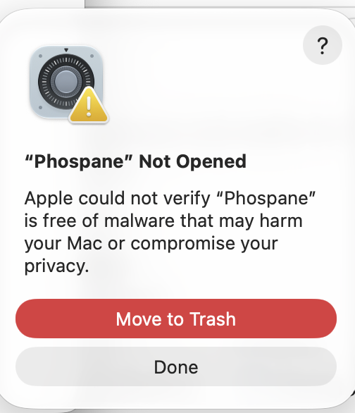
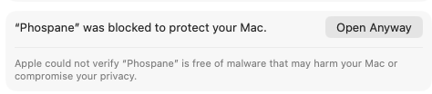
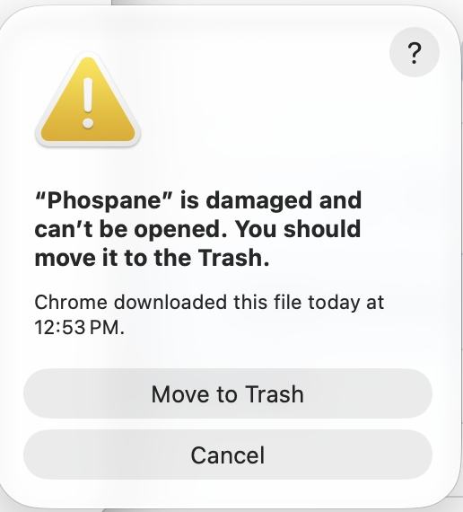

First launch help
Phospane is free and isn't sold through the App Store or signed with a paid certificate, so macOS and Windows warn you the first time you open it. That's expected. Find the message you see below; each one takes a minute, once.
Phospane Not Opened/
Apple could not verify…Mac
Phospane is damaged and can't be openedMac, when sharingAsks for Screen & System Audio Recording Mac, when sharingKeyboard or mouse don't work from the other computer Mac
Phospane would like to find devices on your local networkMac, after an updatePermissions asked again, or on but not working Windows
Windows protected your PCWindows
Do you want to allow this app to make changes?WindowsFirewall asks to allow access
Mac
“Phospane” Not Opened
“Apple could not verify ‘Phospane’ is free of malware…” the first time you open it.
- Click Done. Not “Move to Trash”.
- Open System Settings › Privacy & Security and scroll down to “Phospane” was blocked to protect your Mac.
- Click Open Anyway, then confirm with your password or Touch ID.
- macOS asks one last time: click Open Anyway again. Phospane opens, and won't be blocked again.


Right-click › Open no longer gets past this on macOS 15 Sequoia and later; use System Settings as above.
“Phospane” is damaged and can't be opened
“You should move it to the Trash.” Seen with older downloads and some Mac setups.
- Click Cancel. Not “Move to Trash”. The app isn't broken; macOS says this about downloaded apps it can't check, and offers no Open Anyway button for it.
- Make sure Phospane is in your Applications folder.
- Open Terminal (Applications › Utilities), paste this line and press Return:
It removes the “downloaded from the internet” mark from Phospane only.
xattr -dr com.apple.quarantine /Applications/Phospane.app - Open Phospane again. It starts without a warning.

Asks for Screen & System Audio Recording
When you turn on Share this computer. Not needed if you only connect to other computers.
- Click Open System Settings in the prompt, or go to System Settings › Privacy & Security › Screen & System Audio Recording.
- Turn on Phospane, under both Screen & System Audio Recording and System Audio Recording Only if you see both.
- Quit Phospane (menu bar icon › Quit) and open it again.
Without the audio part, sound still works, just with a little more delay; Phospane shows a note and switches to the faster sound by itself once you allow it.
Keyboard or mouse don't work from the other computer
You see this Mac's screen, but clicks and typing do nothing.
- On this Mac, open System Settings › Privacy & Security › Accessibility.
- Turn on Phospane. If it isn't in the list, click + and choose Phospane in Applications.
- Disconnect and connect again from the other computer.
“Phospane” would like to find devices on your local network
macOS 15 and later, the first time Phospane looks for your other computers.
- Click Allow. Phospane uses it to find your computers at home and to connect to them.
- Clicked “Don't Allow” by mistake? Turn Phospane on in System Settings › Privacy & Security › Local Network.
Permissions asked again after an update
Or Screen Recording / Accessibility shows Phospane turned on, but it doesn't work.
- Open the same page in System Settings › Privacy & Security (Screen & System Audio Recording, or Accessibility).
- Select Phospane and remove it with −, then add it again with + (or let Phospane ask again) and turn it on.
- Quit Phospane and open it again.
WhyUntil Phospane is signed with an Apple Developer ID, macOS sees each update as a new app and forgets what you allowed. This goes away once it's signed.
Windows
“Windows protected your PC”
Microsoft Defender SmartScreen, when you run the installer.
- Click More info (the small link under the text).
- Click Run anyway.
Your browser may also say the file “isn't commonly downloaded”: choose Keep (in Edge: … › Keep › Show more › Keep anyway).
“Do you want to allow this app to make changes to your device?”
The admin prompt, once, during installation.
- Click Yes. Phospane installs for all users and lets itself through Windows Firewall, on home and work networks and on Tailscale only, never on public Wi-Fi.
Windows Firewall asks to allow access
“Windows Defender Firewall has blocked some features of this app.” Normally the installer prevents this.
- Tick Private networks (leave Public unticked) and click Allow access.
- If other computers still can't find this PC, check that your Wi-Fi or Ethernet is set to Private in Settings › Network & internet.
Something else? Open an issue or see the release notes on GitHub.